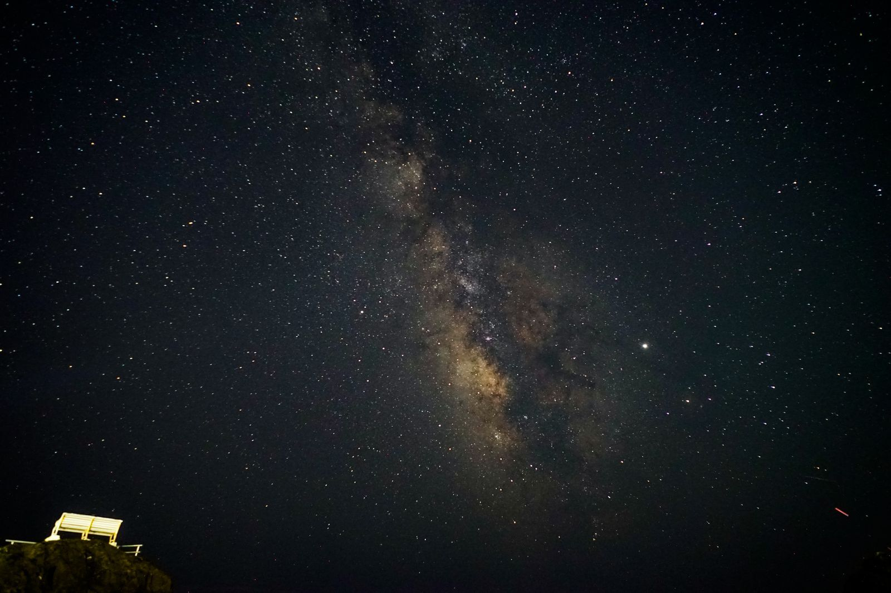
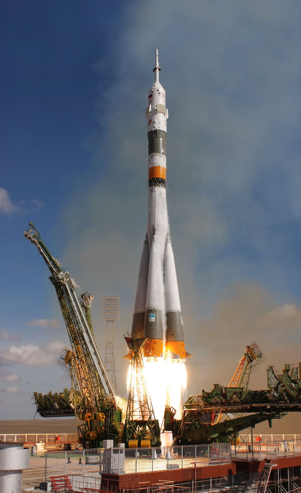
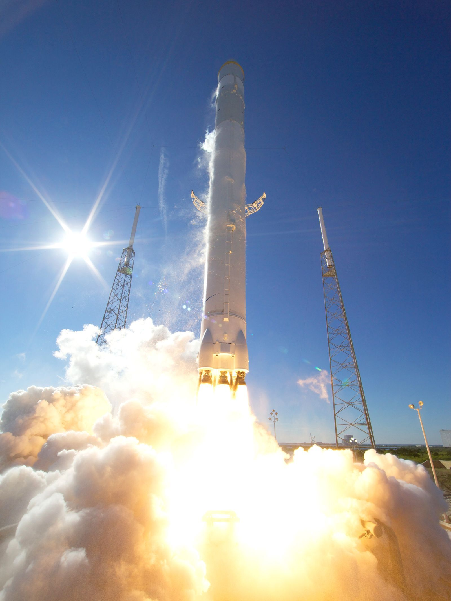

Chapter 8
Beyond the sky
Why wings need air, how the Space Shuttle glided home, and what it takes to fly on Mars.
Up to where the air runs out, round the Earth, home on a glide and on to Mars.

8.1 Why wings need air

A wing cannot push on nothing.
A wing makes lift by moving through air. The more air, and the faster the wing moves, the more lift it makes. NASA’s lift equation has the air density and the speed in it1.
At sea level the air weighs about 1.2 kg in every cubic metre3. Climb, and the air thins. Up high there is so little of it that a wing has almost nothing to work with.
8.2 The edge of space

The sky does not end at a wall. It fades.
People still draw a line. The international air sports federation, FAI, puts the edge of space at 100 km above sea level, the Kármán line. The United States uses 80 km, which is 50 miles4.
The number 100 is a round figure. Theodore von Kármán suggested looking for the height where the air is so thin that a wing would have to fly as fast as a satellite to stay up. He never published a number. The space lawyer Andrew Haley used his idea and got about 84 km5.
In 2018 the astrophysicist Jonathan McDowell showed that satellites can circle the Earth more than once below 100 km, and argued for 80 km5. FAI called the case for lowering the line “compelling” and proposed a meeting of experts to study it6.
8.3 Tsiolkovsky and Korolev

A schoolteacher who had lost his hearing as a boy worked out how a rocket could reach space. Decades later, an engineer whose name was kept secret built one.
Konstantin Tsiolkovsky lost his hearing at ten, after scarlet fever, and taught himself at home. He became a teacher in Kaluga. In 1911 he wrote: “Earth is the cradle of humanity, but one cannot live in the cradle forever”7.
His rocket equation says a rocket’s speed depends on two things: how fast its exhaust rushes out backwards, and how much of its starting weight is fuel. To reach orbit, most of a rocket must be fuel, so he proposed rockets in stages that drop away when empty8,7.
Sergei Korolev led the team that built the R-7 rocket, which launched Sputnik and Yuri Gagarin. In 1938 he had been arrested and sent to prison. While he lived, the world knew him only as the Chief Designer. He died in 19669.
8.4 Sputnik and Laika

In October 1957 a metal ball the size of a beach ball began to beep from orbit.
On 4 October 1957 the Soviet Union launched Sputnik 1, a ball 58 cm across that weighed 83.6 kg. It carried no science instruments, only a radio whose beep-beep people could track around the world. It went round the Earth about every 96 minutes11,12.
Its batteries ran out after 22 days. On 4 January 1958 it fell back into the atmosphere10.
On 3 November 1957 Sputnik 2 carried a dog named Laika, the first animal to orbit the Earth. There was no way to bring her home, and she lived only a few hours in orbit. She is remembered as the first animal to travel around our planet10.
8.5 Gagarin and Tereshkova

“Poyekhali”, “Let’s go”. With that word, Yuri Gagarin left the Earth.
On 12 April 1961 Yuri Gagarin flew once around the Earth in Vostok 1, the first person in space. As the rocket lifted off from Baikonur he said “Poyekhali”. The flight lasted 108 minutes16,17.
Near the end, about 7 km above the ground, he left the capsule in his ejection seat and came down under his own parachute in the Saratov region17.
On 16 June 1963 Valentina Tereshkova, 26, became the first woman in space. She had worked in a textile factory and jumped with parachutes at her local flying club. Her call sign was Chaika, “Seagull”. She flew for almost three days18,19.
8.6 A suit, and a walk in space

To go where the air runs out, you have to bring your own air with you.
In 1935 Emilio Herrera, an engineer from Granada in Spain, designed a pressure suit for a balloon flight above 20,000 m. Its helmet had a visor, a microphone and its own breathing system22. The Spanish Civil War began before the flight, and it never took place23.
On 18 March 1965 Alexei Leonov left Voskhod 2 and floated in space for about 12 minutes, the first person ever to do so. In the vacuum his suit puffed up and went stiff. Without asking the ground, he let some air out of it, and could then bend enough to get back in20.
Leonov was also an artist. He took coloured pencils into space and made the first drawings of Earth from orbit20.
8.7 Timeline: into space

Read down the page, from a teacher’s sums to a helicopter on Mars.
- 1903Konstantin Tsiolkovsky describes the rocket equation8.
- 4 October 1957Sputnik 1, the first artificial satellite10.
- 12 April 1961Yuri Gagarin, the first person in space16.
- 16 June 1963Valentina Tereshkova, the first woman in space18.
- 18 March 1965Alexei Leonov makes the first spacewalk20.
- 20 July 1969Apollo 11 lands on the Moon. Neil Armstrong and Buzz Aldrin walk on it24.
- 12 April 1981The first Space Shuttle, Columbia, launches, 20 years to the day after Gagarin25.
- 15 November 1988Buran flies two orbits and lands with no one aboard32.
- 29 October 1998Pedro Duque becomes the first Spaniard in space, aboard Discovery26.
- 21 December 2015A rocket stage from an orbital launch flies back and lands upright for the first time48.
- 19 April 2021Ingenuity makes the first powered flight on another planet39.
8.8 The X-15 rocket plane
Dropped from a bomber, it fired its rocket for two minutes or less, then glided home.
Three X-15 rocket planes flew 199 times between 1959 and 1968. A B-52 carried each one to about 13,700 m and let it go27.
Its engine burned for 80 to 120 seconds. The rest of the flight, 8 to 12 minutes in all, had no power and ended in a glide landing at about 320 km/h on a dry lake bed. Its main landing gear were skids, like a sledge27.
It reached 7,274 km/h, Mach 6.7, in 1967, and 107.96 km up, above the 100 km line, in 196327.
8.9 Coming home on a glide
Some spacecraft land like gliders. Nothing pulls them. They fall forwards.
The Space Shuttle orbiter landed with no engine power. Its glide home began about an hour before touchdown, on the far side of the planet29. NASA gives it a glide ratio of about 1, against about 70 for a high-performance sailplane, because it had to slow from about 27,800 km/h to about 400 km/h28.
It came in on a slope of about 20 degrees, more than six times steeper than an airliner, and touched down at 343 to 364 km/h. There was no second try29.
The Soviet shuttle Buran flew once. On 15 November 1988 it went up without a crew, circled the Earth twice and landed by itself at Baikonur. Its builder, Energia, said no spacecraft of its class had ever landed completely automatically before30,31.
8.10 Paper planes in the stratosphere

No paper plane has been launched from space. But balloons have carried them a third of the way.
In 2010 a team from the British technology news site The Register sent a paper plane called Vulture 1 up under a balloon over central Spain. It was let go at about 27,300 m, almost 90,000 feet34,36. Guinness World Records recognised it as the highest paper plane launch35.
In 2015 a school science club from Kesgrave High School, near Ipswich in England, beat it. Their Stratos III was released from a high-altitude balloon at 35,043 m37,36.
That is about twice as high as Concorde flew, and about a third of the way to the 100 km line estimate38.
8.11 The origami plane that never launched

A Japanese team planned to drop paper planes from the space station. The planes were tested. They were never launched.
In 2008 Takuo Toda, head of the Japan Origami Airplane Association, and Shinji Suzuki, an aerospace engineer at the University of Tokyo, announced a plan to release small origami planes from the International Space Station. A Japanese astronaut would release about 100 of them from around 400 km up44.
In early 2008 a small prototype, shaped like a space shuttle, went into a hypersonic wind tunnel at the University of Tokyo. It held up at Mach 7, seven times the speed of sound, and at temperatures reported as about 230 to 250 °C44,45.
No plane was ever launched from the station. The launch was tentatively set for 2009. In 2009 the team postponed it, because it would be almost impossible to track the planes over a descent of about a week, and nobody was sure any would survive re-entry46.
8.12 Mars: a helicopter in thin air

On Mars the air is about one hundred times thinner. Ingenuity flew anyway.
On 19 April 2021 NASA’s Ingenuity became the first aircraft to make a powered, controlled flight on another planet. It rose about 3 m, or 10 feet39. It went on to make 72 flights, the last on 18 January 202439.
NASA calls the Martian air less than 1 per cent as dense as Earth’s at the surface; its landing fact sheet says about 1 per cent. A helicopter must be light, with blades larger and faster than a helicopter of the same weight would need on Earth39,40,41.
Ingenuity’s two rotors, each 1.2 m across, spun at about 2,400 rpm. Earth helicopters usually turn at 450 to 500 rpm41. In thin air a wing has to move faster, or be bigger, to make the same lift.
8.13 The numbers behind Mars flight
Air pushes harder on a wing when the air is thicker and the wing goes faster. On Mars that push is tiny.
The quantity ½ρv², half the density times the speed squared, is called dynamic pressure and written q2. Lift is the lift coefficient times q times the wing area1.
At the same speed, Mars air gives about 1.3 per cent of Earth’s q estimate. A wing there needs about 8.8 times the speed, or about 77 times the area, for the same lift estimate. But gravity on Mars is only about 38 per cent of Earth’s, so the lift needed is smaller. Together: about 5.4 times the speed, or about 29 times the wing area estimate.
With the uncertainty in the Mars density, 0.010 to 0.022 kg/m³, the speed factor runs from about 4.6 to about 6.8, and the area factor from about 21 to about 47 estimate. Treat all of these as orders of magnitude, not predictions.
8.14 Rockets that come back

For most of the space age, a rocket flew once. Now some come back down and fly again.
The Space Shuttle was partly reusable. Discovery alone flew 39 missions between 1984 and 2011, more than any other orbiter47.
On 21 December 2015 a SpaceX Falcon 9 first stage, which had just helped send satellites toward orbit, flew back and landed upright at Cape Canaveral. A rocket stage from an orbital launch had never done that before48. In March 2017 a landed stage flew a second mission49.
Others are working on the same idea. ESA’s Themis test stage, built to show that Europe can take off and land a rocket vertically, stood on its launch pad in Sweden in 2025. When we checked, it had not yet made its first hop50.